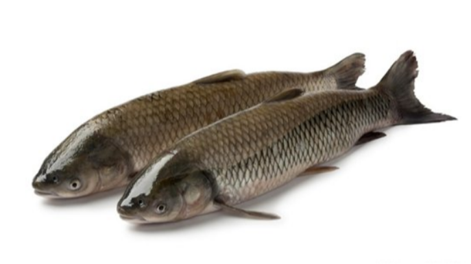
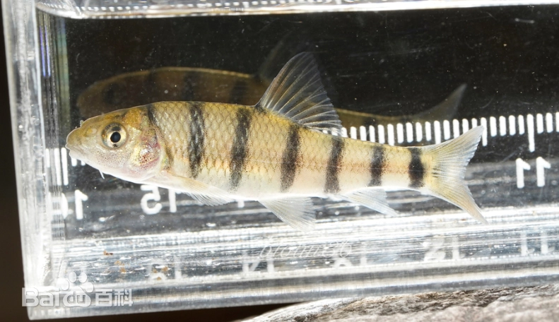
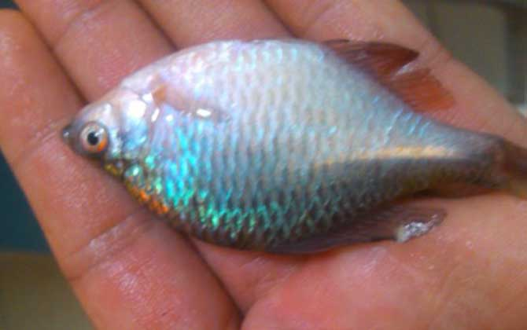

钓鱼技巧（一）：认识鱼类
鲫鱼

鲫鱼（学名：Carassius auratus）是一种淡水鱼，属于鲤形目、鲤科。它通常体型较小，身体呈侧扁形，背部呈青色或灰色，腹部则是银白色。鲫鱼广泛分布在中国及其他亚洲国家，是中国传统的食用鱼之一。
鲫鱼的特点
- 体型：通常体长在20-30厘米之间，但也有更大的个体。
- 外形：身体较为扁平，背部略呈青色或灰色，腹部为银白色，鳞片较为细密。
- 栖息环境：喜欢生活在水质较清的湖泊、池塘、河流等淡水环境中，通常喜欢栖息在温暖的水域。
鲫鱼喜欢吃什么
鲫鱼是杂食性鱼类，它们的食物来源非常广泛，主要包括：
- 水生植物：如藻类、浮萍、芦苇等。
- 昆虫及其幼虫：比如水蚤、蚯蚓、小型昆虫等。
- 底栖有机物：鲫鱼经常在池塘或河床的泥沙中觅食，吃一些沉积在底部的有机物质。
- 其他水中的小型生物：如小型甲壳类、虫卵等。
总的来说，鲫鱼适应力强，能够在不同的水域环境中生存，食物种类也很广泛，因此它们可以在自然环境中找到丰富的食物来源。
鲫鱼的做法
鲫鱼是一种肉质细嫩、味道鲜美的鱼类，可以通过多种方式烹饪，做成美味的菜肴。以下是几种常见且受欢迎的鲫鱼做法：
1. 红烧鲫鱼
红烧鲫鱼是最常见的做法，味道鲜香，汤汁浓郁。
做法：
- 材料：鲫鱼1条（去内脏、鳞）、生姜、葱、蒜、酱油、料酒、糖、盐、胡椒粉、醋、清水。
- 步骤：
- 将鲫鱼处理干净，鱼身两面划几刀以便入味。
- 热锅凉油，加入切好的姜片和葱段煸炒出香味。
- 放入鲫鱼，煎至两面微黄色。
- 加入适量料酒、酱油、糖和少量醋，翻匀后加入足够的水，烧开后转小火炖煮。
- 约10-15分钟后，调入盐和胡椒粉，最后撒上一些葱花，收汁即可。
小贴士：红烧鱼时，火候和糖的掌握很重要，糖可以使鱼肉更加鲜美，酱油的用量要适中，避免过咸。
2. 清蒸鲫鱼
清蒸鲫鱼保留了鱼的原汁原味，肉质鲜嫩。
做法：
- 材料：鲫鱼1条、生姜、葱、酱油、料酒、盐。
- 步骤：
- 将鲫鱼处理干净，鱼肚中放入几片姜片，鱼身两面可以轻划几刀。
- 在鱼身上均匀涂抹一些盐和料酒，腌制10分钟。
- 将鱼放入蒸锅，蒸约8-10分钟，具体时间根据鱼的大小调整。
- 在鱼蒸好后，倒掉蒸鱼时产生的水分，淋上酱油，撒上葱花。
- 热锅凉油，爆香姜葱，最后淋在鱼身上，增添香气。
小贴士：蒸鱼时火候非常重要，过久会影响鱼肉的嫩度，最好保持清蒸的原味，不要加入过多调料。
3. 酸菜鲫鱼汤
酸菜鲫鱼汤酸爽可口，十分开胃，是一道很受欢迎的汤品。
做法：
- 材料：鲫鱼1条、酸菜200克、姜、葱、蒜、料酒、盐、胡椒粉、鸡精。
- 步骤：
- 将鲫鱼去鳞、去内脏，洗净后切段。
- 锅中加油，爆香姜蒜，加入鲫鱼段煎至两面微黄。
- 加入酸菜、适量料酒，继续翻炒片刻。
- 加入足够的水，煮沸后转小火，煮20分钟左右。
- 加盐、胡椒粉、鸡精调味，最后撒上葱花。
小贴士：酸菜要选择酸味适中的品种，过酸或过咸的酸菜会影响汤的口感，火候也要适中，炖煮时间过长会使鱼肉变老。
4. 鲫鱼豆腐汤
鲫鱼与豆腐搭配，汤鲜味美，富有营养。
做法：
- 材料：鲫鱼1条、嫩豆腐200克、姜、葱、料酒、盐、胡椒粉。
- 步骤：
- 将鲫鱼处理干净，切段，豆腐切块。
- 锅中加少许油，加入姜片和葱段爆香，然后放入鲫鱼段煎至两面微黄。
- 加入料酒，接着加入足够的清水，煮沸后转小火。
- 10分钟后加入豆腐，继续炖煮15分钟，直到豆腐吸满鱼汤的鲜美味道。
- 加盐、胡椒粉调味，最后撒上葱花。
小贴士：豆腐最好选用嫩豆腐，豆腐入锅时间不要过早，避免豆腐煮得过碎。
5. 鲫鱼煲汤
鲫鱼煲汤是一道经典的养生汤，适合全家享用。
做法：
- 材料：鲫鱼2条、枸杞、党参、红枣、生姜、料酒、盐。
- 步骤：
- 鳞去内脏的鲫鱼洗净，切段，枸杞和红枣洗净备用。
- 锅中加水，加入鲫鱼段、党参、红枣、枸杞和姜片。
- 用大火煮沸后，撇去浮沫，转小火煲1小时。
- 加盐调味，最后可以加入一些葱花和胡椒粉。
小贴士：煲汤时，可以根据个人口味适量加入枸杞和党参等中药材，具有滋补效果，能提升汤的营养价值。
草鱼

草鱼（学名：Ctenopharyngodon idella），又称“青鱼”或“青花鱼”，是一种淡水鱼，属于鲤科，是中国及其他亚洲国家常见的食用鱼类之一。草鱼是中国四大名鱼之一，肉质鲜美，肉多骨少，营养丰富，广泛应用于家庭烹饪和餐馆菜肴中。
草鱼的特点：
- 体型：草鱼体型较大，成年草鱼体长一般在40-80厘米之间，体重大约1-5公斤，有时可以长到10公斤以上。
- 外形：草鱼体形较长，背部呈青绿色或灰绿色，腹部银白色，体表光滑，背鳍略弯曲，尾鳍较大。
- 栖息环境：草鱼主要栖息在水草丰富的淡水湖泊、河流和池塘中，尤其喜欢栖息在水草丰盛的水域。
- 食性：草鱼主要以水草为食，是典型的草食性鱼类，常常食用水中的浮萍、芦苇、沉水植物等。
草鱼的习性：
草鱼是一种活跃、适应性强的鱼类，通常生活在温暖的淡水环境中。它们具有强大的生长能力和繁殖能力，能够快速成长，适合大规模养殖。
草鱼的营养价值：
草鱼含有丰富的优质蛋白质、脂肪、矿物质和维生素，尤其是低脂肪、高蛋白，因此被认为是一种非常健康的食物，适合各个年龄段的人食用。草鱼的肉质细腻，口感清淡鲜美，且含有丰富的Omega-3脂肪酸，对心血管健康有益。
鲤鱼

鲤鱼（学名：Cyprinus carpio）是一种常见的淡水鱼类，属于鲤科，是世界上养殖最广泛的鱼类之一，也是中国传统的食用鱼之一。鲤鱼原产于亚洲的温带地区，尤其是中国和中亚地区，但现在已经广泛分布于世界各地。
鲤鱼的特点：
- 体型：鲤鱼的体型较大，成年鲤鱼通常体长可达50-80厘米，部分个体可以超过1米，体重大约在1-5公斤之间，也有些大型个体可达10公斤以上。
- 外形：鲤鱼体形较为长形，背部呈青绿色或灰色，腹部为银白色，鳞片较大，背鳍呈弯曲状，尾鳍发达。鲤鱼的嘴部有两对触须，主要用于觅食。
- 栖息环境：鲤鱼适应力非常强，能够生活在各类淡水环境中，常见于湖泊、河流、池塘等地，尤其喜欢水质清澈、富含水草的水域。
鲤鱼的习性：
鲤鱼是底栖鱼类，主要在水底觅食。它们的食物来源包括水中的植物、藻类、浮游生物、昆虫等。鲤鱼也具有较强的适应能力，能够在较为恶劣的环境中生存，耐低氧环境，因此在一些水质较差的水域中也能生长繁殖。
鲤鱼的营养价值：
鲤鱼是一种非常有营养的食物，富含蛋白质、脂肪、矿物质（如钙、磷、铁等）以及多种维生素。它的肉质鲜嫩、低脂肪，高蛋白，是健康饮食的一部分。鲤鱼汤被认为对身体有滋补作用，尤其适合孕妇、产妇及虚弱体质的人群。
鲤鱼的常见做法：
鲤鱼作为食材，有着丰富的烹饪方式，常见的做法有：
- 红烧鲤鱼：将鲤鱼处理好后，炖煮在浓郁的酱油、糖、葱姜蒜的调味汁中，味道香浓。
- 清蒸鲤鱼：保持鱼的原味，搭配少许的酱油、姜葱，清淡又美味。
- 鲤鱼汤：常见于滋补汤品，如鲤鱼豆腐汤、鲤鱼与药材（如枸杞、当归等）炖制的汤。
- 酸菜鲤鱼：鲤鱼与酸菜搭配，酸爽开胃，特别适合喜欢酸味的食客。
- 椒盐鲤鱼：将鲤鱼炸至外脆内嫩，再撒上椒盐，口感丰富。
小贴士：
鲤鱼在烹饪时常有一些腥味，去腥的小技巧包括：使用姜、葱、料酒等调料；在炖煮时，可以加入一些香料如八角、香叶等增加风味；对于鲤鱼汤，搭配一些中草药或酸菜等，可以使味道更加鲜美。
青鱼

青鱼（学名：Ctenopharyngodon idella），又叫青头鱼、青鳞鱼，是淡水鱼类的一种，属于鲤科，与草鱼、鲤鱼等同属于鲤科的成员。青鱼在中国各大河流、湖泊和池塘中广泛分布，是中国传统的食用鱼之一。它们体型较大，生长较快，常见于水产养殖业。
最大的青鱼可以长到180厘米长、超过140斤重，是中国境内体型最大的鲤形目鱼类。
青鱼的特点：
- 体型与外形：青鱼体型较大，身体修长，体长可达50-70厘米，甚至有部分个体可超过1米，体重通常在2-5公斤之间，个别个体可达10公斤以上。青鱼的背部呈青色或灰绿色，腹部为银白色，外形呈梭形。鱼鳞较大，颜色鲜亮，给人一种清新的感觉。
- 栖息环境：青鱼适应力强，常栖息在水草丰富、清澈的淡水水域，如湖泊、河流和水库等。它们喜欢生活在水流缓慢的地方，特别是水深较大的区域。青鱼对水质要求较高，因此它们通常出现在水质清新的地方。
- 食性：青鱼是草食性鱼类，主要以水草、浮游植物、藻类和其他水生植物为食。青鱼的嘴巴宽大，适合食用大量的水草和植物性食物。它们也能摄取水中的一些小型浮游生物，但植物性食物是其主要的食物来源。
青鱼的营养价值：
青鱼肉质细腻，含有丰富的优质蛋白质和不饱和脂肪酸。其肉中含有较多的Omega-3脂肪酸，具有良好的营养价值，适合做为家庭食材。青鱼富含矿物质，如钙、磷、铁等，对人体有较好的滋补作用。青鱼还被认为具有较低的脂肪含量，是健康饮食的一部分。
黑鱼

黑鱼（学名：Channa argus），又叫乌鳢，是一种淡水鱼类，属于鳢科。黑鱼是一种食肉性鱼类，体型较大，广泛分布于中国以及东南亚地区，尤其在长江流域和其他江河湖泊中较为常见。由于其肉质鲜美，黑鱼在中国及一些其他亚洲国家非常受欢迎，常用于家庭和餐馆的烹饪中。
黑鱼的特点：
- 体型：黑鱼体型较大，通常体长可达40-60厘米，个别个体可超过1米，体重大约2-5公斤。
- 外形：黑鱼身体长而侧扁，背部呈深灰色或黑色，腹部较浅，呈灰白色。它的背鳍较长，尾鳍较宽。其体型和颜色使其得名“黑鱼”或“乌鳢”。
- 习性：黑鱼属于食肉性鱼类，喜欢栖息在水草丛生、底部有较多藏匿处的淡水水域。它们非常擅长游泳，且有较强的捕食能力，主要捕食小型鱼类、昆虫、甲壳类等。
黑鱼的栖息环境：
黑鱼适应力强，能够在不同的环境中生存，尤其是在清澈、富有水草的湖泊、池塘和缓流的河流中。它们喜爱栖息在温暖的水域，尤其是温度较高的季节，它们的活动范围也会更广。
黑鱼的营养价值：
黑鱼肉质紧实，脂肪含量较低，富含蛋白质、矿物质（如磷、钙等）和维生素。黑鱼的肉质白嫩且口感独特，因其富含氨基酸和胶原蛋白，被认为是滋补养生的食材。
黑鱼的常见做法：
黑鱼有着丰富的烹饪方式，常见的做法包括：
- 红烧黑鱼：将黑鱼煎至两面微黄后，加入酱油、料酒、糖、葱姜等调料，炖煮至入味，味道浓郁。
- 清蒸黑鱼：保留鱼的原汁原味，蒸熟后加入葱姜和酱油，简单清淡，非常适合喜欢清爽口味的人。
- 酸菜黑鱼：酸菜的酸味与黑鱼的鲜美相结合，口感丰富且开胃。
- 黑鱼汤：黑鱼肉质鲜嫩，可以与豆腐、枸杞、香菇等食材一起炖汤，汤味清鲜且营养丰富。
- 剁椒黑鱼：黑鱼与剁椒相结合，味道鲜香且略带辣味，特别适合喜欢辣味的人。
翘嘴红鲌

翘嘴红鲌（学名：Megalobrama terminalis），又称翘嘴鲌、红鲌，是一种淡水鱼类，属于鲌科。它们广泛分布在中国、东南亚地区的河流、湖泊等淡水水域。翘嘴红鲌因其特有的嘴形和鲜艳的体色而得名，是一种非常受欢迎的食用鱼，且因其较高的经济价值，也常见于养殖业中。
翘嘴红鲌的特点：
- 体型与外形：翘嘴红鲌体型修长，体长可达30-60厘米，个别可超过1米。其最显著的特征是嘴巴微微上翘，像是“翘嘴”，因此得名“翘嘴红鲌”。其体表通常为银灰色，腹部较浅，有时背部颜色较深，尤其在一些成熟个体中，背部和鱼鳍会呈现一些红色的斑纹或色泽。
- 嘴巴形态：翘嘴红鲌的嘴巴上翘，呈“V”字形，适合在水面或水底捕食小型的浮游生物和水中的昆虫。
- 栖息环境：翘嘴红鲌一般栖息在温暖、清澈的淡水水域中，喜欢栖息在水流较缓慢的地方，如河流的支流、湖泊、池塘等。它们对水质要求较高，因此通常生活在较为干净的水域。
翘嘴红鲌的食性：
翘嘴红鲌是杂食性鱼类，食物来源广泛，主要以小型鱼类、浮游生物、昆虫、藻类等为食。它们也会捕食一些在水面活动的小昆虫、甲壳类等。
翘嘴红鲌的营养价值：
翘嘴红鲌的肉质细嫩，富含蛋白质、脂肪及矿物质，尤其是含有一定量的Omega-3脂肪酸，对人体健康有益。其肉质味道鲜美，常被用于制作清蒸、红烧、炖汤等菜肴。
翘嘴红鲌的烹饪方式：
翘嘴红鲌因其肉质鲜美，适合多种烹饪方式。常见的做法有：
- 清蒸翘嘴红鲌：这种做法能够最大限度地保留鱼肉的鲜美原味，搭配姜葱、酱油等简单调料，味道清淡且鲜美。
- 红烧翘嘴红鲌：将翘嘴红鲌用酱油、糖、葱姜等调味料炖煮，汤汁浓郁，味道丰富。
- 翘嘴红鲌炖汤：常用翘嘴红鲌炖汤，搭配豆腐、
鲢鱼

鲢鱼（学名：Hypophthalmichthys molitrix），又叫白鲢，是一种淡水鱼，属于鲤科，是中国和东南亚地区常见的食用鱼之一。鲢鱼原产于中国，广泛分布于中国各大江河湖泊，尤其在长江、黄河流域较为常见。它是一种典型的滤食性鱼类，以水中的浮游生物为主要食物。鲢鱼体型较大，生长迅速，适应力强，常用于水产养殖。
鲢鱼的特点：
- 体型与外形：鲢鱼体型修长，通常成年鲢鱼体长可达40-60厘米，体重大约1-5公斤。鲢鱼的体形较为扁平，背部呈青灰色，腹部则是银白色。鲢鱼的嘴较大，头部较大，眼睛大而突出，这也是其名字中的“眼”字来源之一。
- 栖息环境：鲢鱼喜欢生活在流动水较快的淡水河流、湖泊、池塘等水域，常常栖息在水体中层，尤其在水流较缓慢的地方。鲢鱼是典型的滤食性鱼类，通常在水面或水体中层，靠滤食浮游植物、浮游动物等小型生物为生。
- 食性：鲢鱼是滤食性鱼类，主要通过嘴巴过滤水中的浮游生物（如浮游植物、浮游动物等）来摄取食物。它们的食物包括水中的藻类、浮游生物、植物碎片等。
鲢鱼的营养价值：
鲢鱼肉质鲜嫩，富含高质量的蛋白质、脂肪和矿物质，特别是含有丰富的不饱和脂肪酸（如Omega-3脂肪酸）。鲢鱼的肉质较为细腻，味道清淡，适合多种烹饪方式，且被认为是一种低脂肪、高蛋白的健康食材。
鳙鱼
鳙鱼（学名：Aristichthys nobilis），俗称胖头鱼或大头鱼，是鲤形目鲤科的淡水鱼类，也是中国“四大家鱼”（青鱼、草鱼、鲢鱼、鳙鱼）之一。它因头部占身体比例较大而得名，主要分布于中国和东亚的淡水水域，具有重要的经济价值。以下是鳙鱼的详细介绍：
1. 分类与别名
- 学名：Aristichthys nobilis。
- 别名：胖头鱼、大头鱼、花鲢。
- 分类：
- 目：鲤形目 (Cypriniformes)。
- 科：鲤科 (Cyprinidae)。
- 属：鳙属 (Aristichthys)。
2. 外形特征
- 体型：
- 鳙鱼体型较大，成鱼体长一般为50~100厘米，体重可达几十公斤。
- 最大记录个体超过50公斤。
- 头部：
- 头部宽大且占比明显，眼睛位置靠近嘴部下方。
- 颜色：
- 体表灰黑色或深褐色，腹部较浅，体侧有不规则的黑色斑点或花纹，因此也被称为“花鲢”。
- 其他特征：
- 鳍呈灰色或浅黑色，尾鳍深分叉。
- 鳃耙发达，用于滤食水中的浮游生物。
3. 分布与栖息环境
- 分布区域：
- 原产于中国，广泛分布于长江、黄河、珠江等水系。
- 现已推广到东南亚、北美等地的淡水水域。
- 栖息环境：
- 鳙鱼主要生活在淡水湖泊、河流、水库等大水体中。
- 喜欢栖息于水体中下层，对水质的适应性强，能在浑浊或含氧量较低的水中生存。
4. 生活习性
- 食性：
- 鳙鱼以浮游动物为主食，是典型的滤食性鱼类。
- 通过鳃耙滤取水中的浮游动物，也能少量摄取浮游植物。
- 活动性：
- 性情温和，活动范围较广，常与鲢鱼混群活动。
- 在水温15~28℃时活动最为活跃。
- 繁殖：
- 繁殖季节为每年5~7月，水温升高后，鳙鱼会到河流或湖泊浅水区产卵。
- 鳙鱼产卵后，幼鱼以浮游生物为食，生长较快。
5. 经济价值
- 食用价值：
- 鳙鱼肉质鲜嫩，头部胶质丰富，常用于制作鱼头汤、剁椒鱼头等菜肴。
- 富含蛋白质、不饱和脂肪酸和多种微量元素，营养价值高。
- 养殖价值：
- 鳙鱼是中国重要的淡水养殖鱼类之一，因其生长迅速、适应性强而广泛养殖。
- 与鲢鱼搭配放养，能有效控制水体浮游生物数量，起到净化水质的作用。
6. 鳙鱼与鲢鱼的区别
鳙鱼和鲢鱼常被混淆，但有以下明显区别：
| 特征 | 鳙鱼 | 鲢鱼 |
|---|---|---|
| 头部 | 头部占身体比例大，眼睛靠下 | 头部相对较小，眼睛靠中上位置 |
| 体色 | 灰黑色，有斑点或花纹 | 银白色，无明显斑点 |
| 食性 | 主食浮游动物 | 主食浮游植物 |
| 别名 | 胖头鱼、花鲢 | 鲢鱼、白鲢 |
7. 烹饪方法
鳙鱼因其头部胶质丰富、肉质细腻，适合多种烹饪方式：
- 剁椒鱼头：将鳙鱼头蒸熟后搭配剁椒，鲜香微辣。
- 鱼头豆腐汤：鱼头炖煮后汤汁浓白，适合滋补。
- 红烧鳙鱼：将鳙鱼块用酱料炖煮，入味十足。
- 清蒸鳙鱼：清蒸保持鱼肉原味，突出鲜美。
8. 生态作用
- 鳙鱼通过摄食浮游动物调控水体生态平衡，常用于人工湖泊和水库的生态修复。
- 它与鲢鱼搭配养殖，有助于控制藻类繁殖，改善水质。
9. 保护与现状
- 种群现状：
- 自然水域的鳙鱼种群因水污染和过度捕捞而有所减少，但人工养殖数量较多。
- 保护措施：
- 限制自然水域的捕捞量，加强鳙鱼繁殖期的保护。
- 推广生态养殖，减少对自然水域的依赖。
总结
鳙鱼是一种高经济价值和生态价值的淡水鱼类，不仅是中国人餐桌上的重要食材，也是水体生态系统的重要组成部分。鳙鱼以其独特的外形和丰富的营养价值受到人们的喜爱，同时也需要注重保护自然种群和合理开发利用。
黄颡鱼

黄颡鱼（学名：Pelteobagrus fulvidraco），又名黄骨鱼、黄辣丁，是一种常见的淡水鱼类，属于鲿科（Bagridae）。黄颡鱼又叫黄鳝、黄腥鱼，广泛分布在中国、越南等东亚地区的江河、湖泊及水库中，是一种经济重要的食用鱼。因其肉质鲜嫩、味道鲜美，深受消费者喜爱。
黄颡鱼的特点：
体型与外形：黄颡鱼体型修长，头部较大，嘴巴宽大，形态特征明显。体色通常为黄绿色至棕色，背部较暗，腹部较浅，具有较大的鳃孔和明显的鳞片。成年黄颡鱼体长可达30-50厘米，个别个体可以长至60厘米以上，体重大约在2-4公斤左右。
栖息环境：黄颡鱼喜爱栖息在温暖、流速较缓的水域，如河流、湖泊、池塘和水库等。它们通常栖息在水底，特别偏爱泥沙底质的区域，因此常见于水底植物较多的地方。黄颡鱼对水质要求较高，适应性强，能够在一定的水污染条件下生存。
食性：黄颡鱼是杂食性鱼类，食物包括小型鱼类、昆虫、甲壳类、水生植物、藻类等。由于它们喜欢在水底活动，黄颡鱼通常以底栖食物为主。
罗非鱼

罗非鱼（学名：Oreochromis niloticus），又叫尼罗河罗非鱼、非洲鲫鱼、非洲鲤，是一种原产于非洲和中东地区的淡水鱼类。它属于慈鲷科，是全球广泛养殖的经济型鱼类之一。由于其耐高温、适应力强、生长迅速，罗非鱼在全球尤其是在热带和亚热带地区的水产养殖业中具有重要地位。
罗非鱼的特点：
- 体型与外形：罗非鱼体型较大，成年个体通常长约30-50厘米，体重大约为1-3公斤，最大个体可达5公斤以上。鱼体呈梭形，头部较小，嘴部突出。颜色一般为银灰色，腹部较为浅色，背部呈灰绿色或蓝色。
- 栖息环境：罗非鱼主要栖息在水流缓慢、温暖且富有植物的淡水水域中，如湖泊、池塘、河流、以及水库等。它们喜欢栖息在水温较高（约25°C-30°C）的环境中。
- 食性：罗非鱼是杂食性鱼类，主要食物包括藻类、浮游生物、水草、植物残渣、甚至小型昆虫和有机碎屑。它们会在水面或底部觅食，并且能在水质不太清澈的环境中生存，这使得罗非鱼成为水产养殖中的重要品种。
光唇鱼

光唇鱼又叫做淡水石斑鱼。
光唇鱼（学名：Acrossocheilus），是鲤科（Cyprinidae）中的一种鱼类，常见于淡水水域。它的名字来源于嘴部特征——唇部光滑无须，区别于其他许多鲤科鱼类。以下是关于光唇鱼的详细介绍：
1. 分类学
- 科目：鲤形目 (Cypriniformes)，鲤科 (Cyprinidae)。
- 属：光唇鱼属 (Acrossocheilus)。
- 常见种：光唇鱼包含多个种类，例如短须光唇鱼（Acrossocheilus fasciatus）和云南光唇鱼（Acrossocheilus yunnanensis）等。
2. 外形特征
- 体型：体呈流线型，略侧扁，体长一般在10~25厘米左右。
- 颜色：体色多为灰色、青灰色或黄褐色，部分品种体侧有黑色横纹或斑点。
- 唇部：唇光滑无须，是其显著特征。
- 鳍部：背鳍、臀鳍较发达，尾鳍分叉。
3. 分布与栖息地
- 分布区域：光唇鱼主要分布在中国南方的江河湖泊，尤其是长江流域及以南的山区溪流中，例如福建、广东、广西、云南等地。
- 栖息环境：
- 喜欢生活在清澈的溪流、河流和山间急流中。
- 对水质要求较高，多见于水温适中、含氧量高的水域。
4. 生活习性
- 食性：光唇鱼是杂食性鱼类，主要以水中的藻类、昆虫幼虫、小型无脊椎动物和水生植物为食。
- 活动性：光唇鱼活跃，游动迅速，喜欢在水流湍急处栖息，特别是岩石多、水底清澈的区域。
- 繁殖：
- 繁殖季节一般在春夏季，水温较高时会到浅水区产卵。
- 产卵前，鱼群会有集体活动的现象。
5. 经济价值与保护
- 经济价值：
- 光唇鱼的肉质鲜美，富含蛋白质和营养成分，是一种优质的淡水食用鱼。
- 在某些地区也被用作观赏鱼饲养，因其体色鲜明而受到喜爱。
- 保护现状：
- 由于水域污染、过度捕捞和栖息地破坏，一些光唇鱼种类的数量有所减少。
- 部分地区已将其列为保护对象，需要加强水域环境的保护。
6. 与其他鱼类的区别
- 光唇鱼与其他鲤科鱼类相比，最显著的区别是唇部光滑无须。
- 与野生鲤鱼相比，光唇鱼的体型更为修长，生活环境也更偏向于清澈流动的水域。
马口鱼

马口鱼（学名：Opsariichthys）是一种淡水鱼，隶属于鲤形目鲤科。它以身体修长、游动敏捷、攻击性强而闻名，是中国常见的一种溪流鱼类，同时也是路亚钓法中非常受欢迎的目标鱼。以下是关于马口鱼的详细介绍：
1. 分类与别名
- 学名：马口鱼属 (Opsariichthys)。
- 别名：因地区不同，马口鱼也被称为溪哥、溪流小猛鱼、小马鱼等。
- 分类：属于鲤形目（Cypriniformes），鲤科（Cyprinidae）。
2. 外形特征
- 体型：体长而侧扁，一般长度为10~20厘米，体重约100克左右。
- 颜色：体侧呈银白色或青灰色，带有金属光泽。部分品种体侧有明显的斑纹或纵向条纹。
- 头部：头部尖长，口裂较宽，稍微上翘，颇具攻击性。
- 鳍部：鳍呈半透明或橙红色，特别是繁殖期颜色更加鲜艳。
3. 分布与栖息环境
- 分布区域：
- 马口鱼广泛分布于中国长江流域及南方各主要水系，如广东、广西、福建、云南等地的溪流和小河。
- 也分布在东南亚的一些河流中。
- 栖息环境：
- 喜欢生活在水流清澈、含氧量高的山区溪流、河流的中上层。
- 多见于水流湍急、底部有砂石或卵石的地方。
4. 生活习性
- 食性：杂食性，主要捕食水中的昆虫、小型甲壳类、浮游生物，也会摄食少量藻类。
- 攻击性：
- 马口鱼性情凶猛，常主动捕食动态的小猎物。
- 是溪流中非常活跃的掠食鱼类之一。
- 群居性：
- 通常以小群体活动，成鱼会聚集在流速较快的水域。
- 繁殖：
- 每年春夏季为繁殖季节，通常选择水流较缓的浅水区产卵。
5. 经济与生态价值
- 经济价值：
- 马口鱼肉质细嫩，味道鲜美，适合煮汤、红烧等多种烹饪方式。
- 因其游动敏捷、攻击性强，也是路亚钓鱼爱好者的热门目标鱼。
- 生态价值：
- 马口鱼在生态系统中起到平衡作用，是水体健康的指示物种。
- 它的存在说明水质良好，适合其他生物生存。
6. 钓鱼中的马口鱼
- 路亚钓法的明星鱼种：
- 因为马口鱼捕食性强，反应迅速，经常成为路亚钓法中的入门目标鱼。
- 使用小型亮片拟饵效果最好，特别是在溪流的急流和缓流交界处，抛投后轻轻收线即可吸引马口鱼咬钩。
- 技巧：
- 注意选择清晨或傍晚，鱼的活跃度较高。
- 抛投和收线的节奏可以模拟昆虫落水，吸引马口鱼攻击。
7. 烹饪方法
马口鱼的肉质细嫩且少刺，适合多种家常做法：
- 清蒸：保持鱼肉鲜嫩的同时突出其原味。
- 红烧：搭配酱料，味道更加浓郁。
- 炸制：油炸后外酥里嫩，是很多地区的特色小吃。
8. 保护与现状
- 种群现状：
- 由于过度捕捞和栖息地破坏，部分地区的马口鱼种群数量有所减少。
- 保护措施：
- 适度捕捞，保护溪流生态环境。
- 提倡钓获后放流，保持生态平衡。
总结
马口鱼是一种生态指示性强、经济价值高、钓鱼爱好者喜爱的淡水鱼类。无论是在路亚钓鱼还是美食制作中，它都展现出独特的魅力。
白条鱼

白条鱼是一种常见的淡水鱼，属于鲤科（Cyprinidae），在中国广泛分布。因其体型修长、侧扁，体表银白光亮而得名，是溪流和湖泊中一种活跃的小型鱼类。以下是白条鱼的详细介绍：
1. 分类与别名
- 学名：Zacco platypus（主要为宽鳍鱲，俗称白条鱼）。
- 别名：因地区不同，白条鱼也被称为鱲鱼、尖嘴鱼、白鲦、溪白条等。
- 分类：属于鲤形目（Cypriniformes），鲤科（Cyprinidae）。
2. 外形特征
- 体型：体长而侧扁，通常体长在10~20厘米之间，最大可达30厘米左右。
- 颜色：
- 体侧银白色，腹部呈淡白色。
- 背部多为浅青色或浅绿色，部分品种在阳光下会泛着金属光泽。
- 嘴型：嘴巴尖长，稍微向上翘，适合捕食水面上的昆虫。
- 鳍部：鳍透明或略带淡黄色，尾鳍分叉。
3. 分布与栖息环境
- 分布区域：
- 白条鱼在中国淡水水域广泛分布，长江、黄河、珠江、松花江等流域均有出现。
- 也分布于东亚其他地区，如韩国、日本等。
- 栖息环境：
- 喜欢生活在水流清澈、含氧量高的湖泊、溪流、河流和水库的表层或中层。
- 常出现在水面附近，活动性很强。
4. 生活习性
- 食性：杂食性，主要以水中的昆虫、浮游生物、藻类和小型甲壳类为食。
- 活动性：
- 白条鱼非常活跃，游动迅速，特别是在阳光下时常成群游弋于水面附近。
- 繁殖：
- 繁殖季节通常为春夏季，水温较高时白条鱼会到浅水区产卵。
- 产卵时会有成群的鱼聚集在一起，繁殖力较强。
5. 经济与生态价值
- 经济价值：
- 白条鱼肉质鲜美，刺少，适合烹饪，是一种常见的淡水食用鱼。
- 因其易于钓获，也是许多钓鱼爱好者的目标鱼种。
- 生态价值：
- 白条鱼是淡水生态系统的重要组成部分，是一些掠食性鱼类（如翘嘴鲌、鲶鱼）的猎物。
- 它们的活动对水体的生态平衡具有重要作用。
6. 钓鱼中的白条鱼
- 目标鱼种：
- 白条鱼因其对昆虫敏感、咬钩快、活跃性高，被视为钓鱼初学者练习的理想目标鱼。
- 钓法：
- 台钓：在水库、湖泊中用小钩、小线钓获。
- 路亚：用小型亮片拟饵，模拟水面上落水的昆虫，效果极佳。
- 飞蝇钓：适合模仿昆虫落水，尤其是在白天时效果显著。
- 技巧：
- 白条鱼活跃时间多为晴天的白天，尤其是清晨和傍晚。
- 抛投时可选水面附近或流水交界处。
7. 烹饪方法
白条鱼因体型较小，常用于以下做法：
- 红烧：适合白条鱼的细嫩鱼肉。
- 煮汤：熬制鱼汤，味道鲜美。
- 炸制：小白条鱼油炸后酥脆，适合作为零食或佐餐。
8. 保护与现状
- 种群现状：
- 白条鱼种群数量较为稳定，属于低风险鱼类。
- 保护措施：
- 避免过度捕捞，尤其是在繁殖季节，应保护其产卵环境。
- 保持水体清洁，白条鱼对水质要求较高，是水体生态健康的指标之一。
总结
白条鱼是一种分布广泛、生态作用重要的淡水鱼类。
鳑鲏

鳑鲏鱼（学名：Rhodeus），是鲤形目鲤科的一类小型淡水鱼，因其颜色艳丽、体型小巧而受到喜爱。它们广泛分布于中国及东亚的淡水水域，并因其与河蚌共生的特殊繁殖方式而闻名。以下是关于鳑鲏鱼的详细介绍：
1. 分类与别名
- 学名：鳑鲏属 (Rhodeus)。
- 别名：俗称七星鱼、花鳅、蚌鱼等。
- 分类：属于鲤形目（Cypriniformes），鲤科（Cyprinidae）。
2. 外形特征
- 体型：体形短小，一般体长为5~10厘米，最大可达12厘米。
- 颜色：
- 鳑鲏鱼体侧呈银灰色或青绿色，腹部略显白色。
- 部分种类体侧具有艳丽的彩虹色或金属光泽，在阳光下尤为显眼。
- 繁殖季节，雄鱼体色更加鲜艳，出现亮蓝或红色条纹。
- 体型特征：体扁平，呈菱形，尾鳍分叉。
3. 分布与栖息环境
- 分布区域：
- 鳑鲏鱼广泛分布于中国的长江、黄河流域及其他淡水水域，东北、华北、华东等地均可见。
- 也分布于东亚其他地区，如韩国、日本等。
- 栖息环境：
- 喜欢生活在缓流的河流、湖泊、水库和池塘中。
- 常活动于水草茂盛的浅水区，对水质要求不高。
4. 生活习性
- 食性：杂食性，以藻类、浮游生物、小型水生昆虫和植物碎屑为食。
- 活动性：性情温和，喜欢成群活动，常在水草间游弋。
- 繁殖：
- 鳑鲏鱼的繁殖方式非常特殊，称为“寄生繁殖”。
- 雌鱼在繁殖期将卵产入河蚌的鳃腔中，利用河蚌提供的保护和氧气孵化鱼卵。
- 幼鱼孵化后，会自行从河蚌中游出。
- 雄鱼则会保护河蚌附近的区域，吸引雌鱼产卵。
- 鳑鲏鱼的繁殖方式非常特殊，称为“寄生繁殖”。
5. 经济与生态价值
- 观赏价值：
- 鳑鲏鱼因其色彩艳丽、体态优美，常被饲养为观赏鱼。
- 它们适合家庭水族箱，特别是在繁殖季节，雄鱼的绚丽色彩备受关注。
- 生态价值：
- 鳑鲏鱼与河蚌共生，对维持淡水生态系统的多样性有重要意义。
- 它们是许多掠食性鱼类的天然饵料，构成了生态链的重要环节。
6. 与其他鱼类的区别
- 鳑鲏鱼因体型小巧、颜色鲜艳且与河蚌共生繁殖，与其他鲤科鱼类显著不同。
- 它们体型比常见的白条鱼、马口鱼更小，习性也更温和。
7. 保护与现状
- 种群现状：
- 鳑鲏鱼种群数量较为稳定，但在某些地区因水质污染和栖息地破坏，数量有所减少。
- 保护措施：
- 避免过度捕捞，尤其是在繁殖季节。
- 保护水体环境，维护鳑鲏鱼与河蚌的共生关系。
8. 饲养与观赏
- 饲养环境：
- 鳑鲏鱼适合在水族箱中饲养，需要水草覆盖、水质清澈的环境。
- 它们对水温适应性强，通常在18~25℃的温度下生活。
- 喂养：
- 可以喂食鱼饲料、藻类、微小昆虫等。
- 适合与性情温和的小型鱼类混养。
总结
鳑鲏鱼是一种兼具生态价值和观赏价值的小型淡水鱼。它们的美丽外观和独特的繁殖方式使其在淡水鱼类中显得别具一格。无论是在自然水域观察，还是作为观赏鱼饲养，鳑鲏鱼都值得关注和保护。
鲶鱼
鲶鱼能不能吃，要看水质。

鲶鱼是一种常见的淡水鱼，属于鲶形目鲶科（Siluridae）。鲶鱼因其体型较大、肉质鲜美、适应性强而广泛分布于全球淡水水域。以下是关于鲶鱼的详细介绍：
1. 分类与别名
- 学名：鲶属 (Silurus)，但具体种类众多。
- 别名：在中国不同地区有不同叫法，如塘鲶、土鲶、胡子鱼等。
- 分类：
- 目：鲶形目 (Siluriformes)。
- 科：鲶科 (Siluridae) 或其他鲶形目鱼科。
2. 外形特征
- 体型：
- 鲶鱼体型呈长条形，前部圆形，后部侧扁。
- 体长因种类而异，小的20~30厘米，大的可达1米甚至更长。
- 颜色：
- 身体颜色通常为灰黑色、青色或褐色，部分种类腹部呈浅色。
- 嘴部：
- 头部扁平宽大，嘴部有明显的触须（俗称“胡须”），用于探测食物。
- 鳍部：
- 背鳍较短，胸鳍发达，尾鳍呈圆形。
- 部分鲶鱼种类的胸鳍带有硬棘，有一定的防御功能。
3. 分布与栖息环境
- 分布区域：
- 鲶鱼广泛分布于全球淡水水域，中国的江河、湖泊、水库和池塘中随处可见。
- 也分布于热带、亚热带及部分温带地区。
- 栖息环境：
- 鲶鱼适应性强，多生活在河流、湖泊和池塘的底层。
- 喜欢在水草茂盛、泥沙较多、流速缓慢的水域活动。
- 它们多为夜行性，白天隐蔽于水底，晚上觅食。
4. 生活习性
- 食性：
- 鲶鱼是杂食性鱼类，偏向肉食性。
- 主要以水底的昆虫、甲壳类、小鱼、小虾、腐殖质为食，也吃植物碎屑。
- 活动性：
- 活动多在夜间，夜行性显著，善于躲避阳光。
- 对环境的耐受力较强，能在低氧环境或浑浊的水中生存。
- 繁殖：
- 繁殖期一般在春夏季，水温较高时。
- 雌鱼产卵于水底的洞穴或石缝中，由雄鱼负责看护。
5. 种类
鲶鱼种类繁多，以下为几种常见的鲶鱼：
- 普通鲶鱼 (Silurus asotus)：分布于中国及东亚地区，体型中等。
- 大口鲶 (Clarias gariepinus)：常见于东南亚及非洲地区，适应性极强。
- 清江鲶：中国特有品种，分布于长江水系。
- 美洲鲶 (Ictalurus punctatus)：引入中国，因生长速度快而被养殖。
6. 经济价值
- 食用价值：
- 鲶鱼肉质鲜嫩，无小刺，适合各种烹饪方式，如红烧、清蒸、煮汤、火锅等。
- 含有丰富的蛋白质、脂肪和微量元素，适合补充营养。
- 养殖价值：
- 鲶鱼生长快、适应力强，是许多地区的重要养殖鱼类。
- 广泛用于水产养殖，市场需求量大。
- 生态价值：
- 鲶鱼是水体生态系统的重要成员，对维持水体生态平衡有重要作用。
7. 与其他鱼类的区别
- 鲶鱼与其他淡水鱼的主要区别在于其“胡须”和光滑无鳞的皮肤。
- 鲶鱼多在水底活动，习性不同于喜欢游动于水面或中层的鱼类（如白条鱼）。
8. 烹饪方法
鲶鱼适合多种烹饪方式，常见做法有：
- 红烧鲶鱼：浓油赤酱，味道鲜香。
- 酸菜炖鲶鱼：酸菜的酸味与鱼肉的鲜嫩结合，特别开胃。
- 鲶鱼火锅：搭配多种蔬菜和香料，适合聚餐。
- 清蒸鲶鱼：突出鲶鱼肉质鲜美的特点。
9. 注意事项
- 鲶鱼脂肪含量较高，不适合胆囊疾病患者多食。
- 因鲶鱼生活在水底，容易积累水体中的污染物，因此应选择水质好的鲶鱼食用。
总结
鲶鱼是一种高经济价值的淡水鱼类，因其适应性强、味道鲜美而备受欢迎。无论是作为食材还是生态系统的重要组成部分，鲶鱼都展现了它的重要性。
黄尾鲴

泥鳅
泥鳅，学名为Misgurnus anguillicaudatus，是一种广泛分布于东亚地区的淡水鱼类，尤其在中国、日本和韩国等地较为常见。泥鳅因其适应能力强、生活环境广泛而备受关注，既在生态系统中扮演重要角色，也在农业和饮食文化中具有重要地位。
泥鳅的特点
外形特征：
- 体型：泥鳅体长且细长，通常呈圆柱形，身体柔软，灵活。
- 颜色：身体颜色多为棕色、灰色或绿色，背部较深，腹部较浅。
- 头部：头部较小，口部两侧有胡须状的触须（也称为胡须），用于感知周围环境和寻找食物。
- 鳍：背鳍较短，胸鳍和腹鳍发达，尾鳍呈扇形。
适应能力：
- 低氧环境：泥鳅具有在低氧甚至缺氧环境中生存的能力，可以通过皮肤和鳃吸收空气中的氧气。
- 耐受温度变化：泥鳅对水温变化具有较高的耐受性，能够在不同温度下生存。
- 休眠能力：在干旱季节或水位下降时，泥鳅可以进入休眠状态，藏匿于泥土中，等待水源恢复。
泥鳅的生活环境
泥鳅主要栖息于泥泞或淤泥底部的河流、湖泊、池塘、灌溉沟渠等淡水环境中。它们喜欢隐蔽的环境，常在水底的泥沙中掘洞穴，以躲避天敌和寻找食物。
泥鳅的饮食习性
泥鳅是杂食性鱼类，主要以小型无脊椎动物、有机碎屑、水生植物和藻类为食。它们通过嘴部的触须感知食物，并用细小的牙齿将食物撕碎后吞食。
泥鳅的繁殖
泥鳅的繁殖能力强，雌雄鱼体型相似，难以通过外观区分。繁殖季节通常在春季和秋季，雌鱼一次可产下数百至上千颗卵。卵孵化后，幼鱼迅速成长，适应环境的能力也很强。
泥鳅的经济和文化价值
食用价值：
- 营养丰富：泥鳅富含蛋白质、维生素和矿物质，肉质鲜嫩，味道鲜美，是许多地方的传统美食。
- 烹饪方式：常见的烹饪方法包括清蒸、红烧、炖汤、煎炸等。例如，清蒸泥鳅汤、红烧泥鳅等菜肴深受人们喜爱。
养殖价值：
- 养殖简便：泥鳅养殖技术相对简单，适应性强，能够在不同水质和环境下生长。
- 高产量：泥鳅生长速度快，繁殖能力强，适合作为水产养殖的重要品种。
- 经济效益：泥鳅市场需求稳定，价格适中，是养殖户增收的重要途径。
药用价值：
- 传统中医：泥鳅在中医中被认为具有补血、滋阴、润肺等功效，常用于治疗贫血、虚弱、咳嗽等症状。
- 药膳食疗：泥鳅常被用于药膳，如泥鳅炖豆腐汤，有助于补益身体。
黄鳝
黄鳝，学名Monopterus albus，俗称青鳝、草鳝或泥鳅鳝，是一种广泛分布于东亚地区的淡水鱼类。黄鳝因其肉质鲜美、营养丰富，在中国及周边国家的饮食文化中占有重要地位，同时也是重要的经济养殖鱼类。
黄鳝的分类与学名
- 界：动物界（Animalia）
- 门：脊索动物门（Chordata）
- 纲：鱼纲（Actinopterygii）
- 目：鲶形目（Siluriformes）
- 科：鳗鲡科（Synbranchidae）
- 属：Monopterus
- 种：Monopterus albus
外形特征
- 体型：黄鳝体长而细长，通常呈圆柱形，身体柔软，缺乏明显的鳍条。
- 颜色：身体颜色多为浅黄色至棕色，背部颜色较深，腹部较浅。部分品种可能带有细小的黑色斑点或条纹。
- 头部：头部较小，口部宽大，具有发达的触须（须），用于感知周围环境和寻找食物。
- 鳞片：身体覆盖着细小、光滑的鳞片，触感柔软。
- 鳍：背鳍和臀鳍较为隐蔽，呈细长条状，位于身体的后部。
生活习性与生态环境
- 栖息地：黄鳝主要生活在淡水环境中，如池塘、湖泊、河流、稻田、灌溉沟渠等湿地。它们喜欢泥沙底质、植被丰富的环境，善于在隐蔽处藏匿。
- 活动习性：黄鳝夜行性较强，白天多在泥沙中潜伏，夜间出来觅食。
- 适应能力：黄鳝对水质变化适应能力强，能在低氧甚至缺氧环境中生存，通过皮肤和鳃吸收空气中的氧气。
食性与捕食方式
- 食性：黄鳝为杂食性鱼类，主要以昆虫、蠕虫、小型无脊椎动物、小鱼、蚯蚓、水生植物等为食。
- 捕食方式：利用敏锐的触须和灵活的身体在泥沙中寻找和捕捉猎物，动作迅速而精准。
繁殖特性
- 繁殖季节：黄鳝通常在雨季繁殖，水位上升、食物丰富的环境有利于其繁殖。
- 繁殖方式：雌雄鱼体型相似，难以通过外观区分。雌鱼一次可产下数百至上千颗卵，卵孵化后，幼鱼迅速成长，适应环境能力强。
- 繁殖习性：黄鳝为卵生鱼类，幼鱼阶段生活在水中，逐渐发育为成鱼。
经济与食用价值
- 食用价值：
- 营养丰富：黄鳝肉质鲜嫩，富含高蛋白、低脂肪，含有多种维生素（如维生素A、B群）和矿物质（如钙、铁、磷）。
- 烹饪方式：常见的烹饪方法包括清蒸、红烧、煮汤、炖煮、煎炸等。例如，清蒸黄鳝、红烧黄鳝汤、黄鳝炖豆腐等菜肴深受消费者喜爱。
- 养殖价值：
- 养殖技术：黄鳝养殖技术成熟，适应性强，能够在不同水质和环境条件下生长。
- 高产量：黄鳝生长速度快，繁殖能力强，养殖户可以在较短时间内获得高产量。
- 经济效益：由于市场需求稳定且价格较为适中，黄鳝养殖成为许多水产养殖户增收的重要途径。
生态与环境作用
- 生态平衡：黄鳝通过捕食水中的小型无脊椎动物和有机碎屑，帮助控制水生生物种群数量，维持生态平衡。
- 水质净化：黄鳝在水底活动，有助于翻动泥沙，促进水体的循环和氧气交换，改善水质。
- 食物链：黄鳝是许多水生捕食性动物（如鸟类、蛇类、哺乳动物）的重要食物来源，构成了复杂的食物链。
文化与传统
- 传统美食：黄鳝在中国饮食文化中具有悠久的历史，尤其在江南地区，黄鳝是一道经典的家常菜。其独特的口感和丰富的营养使其备受青睐。
- 药用价值：在传统中医中，黄鳝被认为具有补血、滋阴、润肺等功效，常用于治疗贫血、虚弱、咳嗽等症状。黄鳝药膳如黄鳝汤、黄鳝粥等在养生保健中广泛应用。
总结
泥鳅是一种适应性强、经济价值高的淡水鱼类，不仅在生态系统中发挥重要作用，也在农业和饮食文化中具有重要地位。其养殖简便、市场需求稳定，使其成为许多地区水产养殖业的重要组成部分。同时，泥鳅在传统中医中的药用价值也为其增添了更多的应用领域。
鳜鱼
鳜鱼，学名Siniperca chuatsi，是中国传统的名贵淡水鱼之一，也是餐桌上的美味佳肴。以下是关于鳜鱼的详细介绍：
1. 鳜鱼的基本信息
- 俗称：桂鱼、鳌花鱼、季花鱼、淡水石斑鱼。
- 科属：鲈形目，真鲈科，鳜属。
- 分布：主要分布于中国的长江、黄河、珠江流域，以及湖泊、河流、水库等淡水区域。
2. 外形特征
- 体型：体形较短，侧扁，呈椭圆形。
- 颜色：背部和身体两侧为黄褐色，并带有不规则的深色斑点，类似“迷彩”。
- 头部：头部宽扁，嘴大，口裂斜，具有锋利的牙齿，咬合力强。
- 鱼鳍：背鳍分为硬刺部分和软条部分，尾鳍呈扇形。
3. 生活习性
（1）食性
- 鳜鱼是典型的肉食性鱼类，以小鱼、小虾为食，捕猎能力极强。
- 具有“吞食猎物”的习惯，经常伺机伏击猎物。
（2）栖息环境
- 喜欢栖息在水质清澈、溶氧量高的环境，如湖泊、河流、水库等。
- 常活动于水草茂密、岩石众多或水流较缓的区域。
（3）繁殖
- 鳜鱼通常在春夏交替季节（4-6月）繁殖，产卵水温为20℃-25℃。
- 鳜鱼的卵是漂浮性的，会附着在水草上孵化。
4. 鳜鱼的经济价值
（1）食用价值
- 肉质：鳜鱼肉质细嫩，几乎无小刺，蛋白质含量高，脂肪少，是中国传统的“长江三鲜”之一。
- 烹饪方式：
- 清蒸鳜鱼：保持鱼肉的鲜嫩和原汁原味。
- 红烧鳜鱼：滋味浓郁，适合重口味。
- 水煮鳜鱼片：肉片鲜嫩、汤底香浓。
- 松鼠鳜鱼：苏菜名菜，造型美观，味道酸甜适口。
（2）经济价值
- 鳜鱼价格较高，广泛用于餐饮业和水产养殖业。
- 因其肉食性特征，对饲料要求较高，在人工养殖中成本较高，但市场需求旺盛。
5. 生态意义
- 鳜鱼在生态系统中处于高位捕食者角色，有助于调控小鱼和虾类的数量，维持生态平衡。
- 由于其对水质要求较高，鳜鱼的出现往往是水质良好的标志。
6. 钓鳜鱼的技巧
（1）钓法
- 路亚钓：使用小鱼或虾形软饵，模拟猎物，诱使鳜鱼攻击。
- 底钓法：使用活饵（如小鱼、小虾）垂钓。
（2）时间选择
- 鳜鱼多在早晨和傍晚活跃，是钓鱼的最佳时间。
- 鳜鱼喜欢伏击猎物，因此钓点选择在水草丛、石块缝隙或水底高低不平的区域效果较佳。
7. 鳜鱼的文化意义
- 传统名句：唐代张志和的《渔歌子》中有“西塞山前白鹭飞，桃花流水鳜鱼肥”，生动描绘了鳜鱼在春季美景中的场景。
- 鳜鱼自古以来便是“美味佳肴”的象征，也寓意丰收和富足。
8. 保护现状
- 随着水质污染和过度捕捞，野生鳜鱼资源逐年减少。
- 人工养殖鳜鱼已成为主流，但生态保护和可持续发展仍是重点。